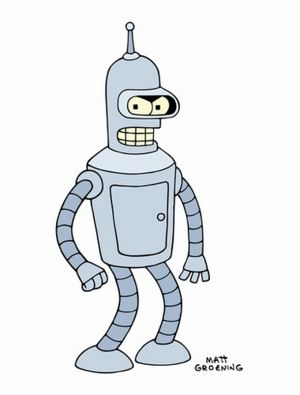

Avatar: la leyenda de Aang
 De: La Frikipedia, la enciclopedia extremadamente seria.
De: La Frikipedia, la enciclopedia extremadamente seria.
| De la serie anime para todos:
|
| Avatar: la leyenda de Aang
|
|
|
| ¿Estáis seguros que es un anime?
|
|
| Género:
|
Yaoi, Yuri, Lolicon
|
| Episodios:
|
61.
|
| Autor del manga:
|
Los protas de Seguimos fumando.
|
| Publicación:
|
2005-2008.
|
| Publicado en:
|
Yanquilandia.(México)
|
| Director del anime:
|
Líder de Akatsuki.
|
| Transmitido en:
|
Nickelodeon.
|
| Ovas:
|
Ninguno.
|
| Películas:
|
3 que van a ser Live Action (esperemos que no sean mierdas).
|
| Notas
|
Son todos frikis (tanto los autores como los personajes).
|
«Esto no es anime»
~ Otakus al ver esto
«¿Por que carajos esta en la categoría anime?»
~ Otakus aun protestando al ver esto
Avatar el ultimo maestro aire o la leyenda de Aang, es un anime pirata creado por los gringos en un intento de esclavizar el mundo antes de que lo hiciera Japón. Como no quisieron ser tan copiones en vez de poner aun japonés pusieron a un chino para llevar a acabo la elaboración de su plan mundial. Sin embargo los otakus protestan mucho por esta serie por ser un completo fusil al anime. Aun así muchos siguen creyendo que es un anime a pesar de que en los créditos no hay ningún nombre japones pero bueno que se le va a hacer.Sin embargo, este articulo esta en la categoría anime...
Personajes
Principales
- Aang: Es el prota de esta serie, es un niño
Calvo que tiene alopecia, de 12 años que estuvo atrapado en un iceberg durante 100 años ( es más viejo que tu tataratataraabuela) y curiosamente no murió de hipotermia el joputa. Es el ultimo maestro del aire. Este fue el único que sobrevivió a la orgíade los nómadas del aire por parte de la Nación del Fuego. Su destino supuesto es el de Traficar controlar los cuatro elementos. Está enamoradico de Katara desde que la conoció en el Polo Sur. "Amor a Primera Vista"
- Katara: Una gitana Nacida en el Caribe De 14 años, cabello largo café, ojos azules ( cuernos patrocinados por mariscos Recio) y con tendencia hacia el Agua, es la ultima maestra agua de la tribu del sur, ya que el Norte es para los ricos
traficantesy la típica Chica Guapa que esta en la serie nada más para poner Caliente al protagonista y enseñarle las tetas a controlar el agua . Su madre fue asesinada por la nación del fuego. Fue la que libero a Aang del iceberg y desde entonces ha sentido la necesidad de ser su chica del Alma, pero ella necesita Tiempo (o por lo menos que se le pase la regla ).
- Sokka: El Gitano como ninguno es Hermano de Katara y aunque se haga el valiente con el Blumelang al muy inútil siempre le dan palizas monumentales y siempre termina bañado en las sustancias mas asquerosas conocidas por el hombre ( por
gilipollas imbécil) . Es el único del grupo que no tiene poderes (imagínate si se los dan...) y como dije antes siempre le dan palizas, pero es el más inteligente porque es Gitano. No sabe cómo tratar a las chicas por lo que estas usualmente lo rechazan, aunque de vez en cuando capta la atención de algunas desesperadas cuyos nombres no mencionaré (Ty Lee, Yue, Suki ).
- Toph: Es una Paya, podrida de dinero, de 12 años de edad. Al nacer, era tan fea que sus padres la enterraron bajo tierra, y así Toph
pacio aprendió a controlar la tierra, con tan mala suerte que le entró un poco de arenilla en los ojos y se quedo ciega. A partir de ese momento Toph odió a sus padres, y por eso se escapa para drogarse y acostarse con el resto de niños de la ciudad combatir en torneos, y allí es donde Aang la conoce, y consigue convencerla tirándosela para que sea su entrenadora. Toph Puede "ver" con las vibraciones de la tierra, por lo que sabe si la estás persiguiendo con malas intenciones o si hay un Terremoto por las Capas Testonicas de la Tierra. (Toph Sismómetro)
- Príncipe Zuko: No, no es la marca de jugo, es un joven príncipe de 16 años exiliado de la Nación del Fuego cuya misión es al inicio capturar al avatar, pero después se hace bueno y le enseña fuego-control.
y a saber que más...al calvito. La cicatriz en la parte izquierda de su cara se la hizo a los 13 años, cuando su padre, el muy hijo de Puta le quema la cara intentando enamorar a Mai con su habilidades era pederasta, lo que le provocó una cicatriz Tope Chunga en el ojo. Todo esto ocurrió poco antes de su exilio. Su principal función en esta serie es hacer que a las fans-girl les de su Panties, dado que es considerado uno de los Payos mas sexys de la serie por ellas y todos los gays.
- Iroh: General retirado de la Nación del Fuego. No se sabe mucho de este tipo, solo sabemos que tenia un hijo que murió en la invasión a una ciudad cuyo nombre se me va y era quien originalmente iba a ser el Señor del Fuego (es el tío de Zuko). El Payo Vive en Chabolas con las Chapas que encontraba. Tiene un vicio incontrolable hacia el té y los Malacatones que los Vende después en el Rastrillo. "Vendo Malacatones a Buen Precio, Vamos Rubio ¡Que me lo quitan de las Manos!"
- Azula: La hermanita menor de Zuko, la cual es extremadamente sádica/cruel/loca, quiere asesinar al avatar por un motivo del cual ni creas voy a contarte. Su padre siempre tuvo preferencia por ella (y quien no la Paya salio Hermosita) en vez de Zuko, lo que los llevó a hacer muchas actividades juntos y constantemente, lo que consiguientemente la llevó a ella a ser la Niñita de Papa. También quiere asesinar al emo de su hermano por considerarlo un traidor a la Moda.
- Appa: Un bisonte volador gigante de seis patas y hace de Fugoneta de Aang desde hace mucho tiempo. es Difícil de Peinar y lavarlo, Es fácil de Robarlo ya que solo hay que decir YIP-YIP lo difícil es pilotarlo con su habilidad de volar.
Secundarios
- Ozai: No hay mucho que decir sobre este viejo, excepto que es el malo de los malos, el auténtico Señor del Fuego al que Aang debe derrotar. No se suponía que tuviese ese puesto ya que le correspondía a su hermano mayor Iroh, pero este último lo rechazó porque pensó que sería demasiado trabajo y en el fondo es un holgazán (la muerte de su hijo fue solo un pretexto para ello). Le debe su prematuro ascenso a su esposa que le provocó al Señor del Fuego Azúlon un paro cardíaco al mostrarle su escultural cuerpo, y el nivel de excitación no pudo con el anciano.
- Mai: Una de las sádicas amigas de la infancia de Azula. Desde muy pequeña siempre ha querido tirarse al príncipe Zuko más que nada para ver si tenía suerte y lograba convertirse en la Señora del Fuego, aunque se le arruinaron los planes cuando Zuko fue echado a patadas de la nación. Todo el día está jugando a los dardos por lo que tiene muy buena puntería y es muy buena para clavar agujas filosas en lugares extremadamente sensibles. Sin objetivos en la vida, no tuvo más que ser la esclava sexual de la depravada de Azula, hasta que se enteró de que Zuko iba a ser el señor del fuego, entonces volvió con él. (que lindo es el amor)
- Ty Lee: Otra de las amigas de la infancia de Azula, solo que no es tan sádica. Se escapó de su casa para convertirse en un fenómeno de circo y tener liberación espiritual y sexual, pero Azula la convenció muy amablemente a unirse en la búsqueda del Ávatar (y con amablemente me refiero a que la torturó psicológicamente), aún así decidió ayudarla porque tenia deseos
sexuales de conocer a este casto monje del áire. también siente una notable atracción hacia Sokka a causa de hace mucho tiempo que no tiene un hombre en su vida (si es que a Sokka lo podemos considerar un hombre).
- Tiene la habilidad de tomar innumerables poses y doblarse en en diferentes y sensuales posturas, por estas razones, Ty lee es la favorita de muchos fans del Ávatar... (pues alienta mucho a la imaginación).
- Momo: Bicho raro mezcla de otros bichos raros (como todos los animales de esta rara serie). Se cree que es una cruza entre una rata canguro y el Conde Drácula aunque algunos sugieren la aburda teoría de que es un lémur-murciélago. Sokka intentó comérselo el día que lo encontraron en el Templo Aire Sur, pero Aang lo convirtió en su mascota/sirviente, aunque es un inútil que solo está de adorno ya que no sirve para nada que no se trate de esconderse, comer insectos o traer de todo exceptuando lo que le pides.
- Suki: La alumna más sobresaliente de la escuela de travistió a Sokka como castigo para quitarle el machismo y de paso instruirlo en el arte de la prostitución.
Los que no importan
- Jet: El Robin Hood de la serie, solo que en vez de robarle a los ricos para darle a los pobres, él le roba a los pobres y se queda con todo junto con su pandilla de maleantes homosexuales con los que se monta grandes orgías en su casita del árbol.
- El Rey Bumi: Un viejo destartalado de 112 años de edad al cual por algún motivo le permiten gobernar la ciudad de Omashu, sin importar la aterrorizante situación psicológica en la que se encuentra (está casi tan loco como Azula). El muy holgazán no quiso ayudar a
Omi Aang a ser un maestro tierra.
- Zhao: Murió ahogado como una rata en el último capítulo de la primera temporada y todos se mearon encima de la risa cuando eso ocurrió.
Las naciones y sus maestros o bender
Aquí un buen ejemplo de maestro tierra.
 Bender es como llaman a los maestros en USA.
- La Tribu del Hagua: Son unos esquimales que viven en el polo norte y sur y se dedican a hacer helados. Ahí viven los maestros hagua, que pueden echarle hagua a la gente y también el hielo ya que bueno para que te agarre un buen resfriado. Están en peligro de extinción ya que el clima que soportan les congela los genitales y los vuelve estériles.
- El Reino de la Tierra: Es un reino donde viven los maestros tierra, son maestros que te pueden lanzar piedras y descalabrarte la cabeza, también te pueden echar arena y lodo en los ojos y en si eso es todo lo que hacen. Las piedras y el barro resultan también ser su principal fuente de alimento. Esta es la única de las naciones que sirve para algo y le da una buena pelea a la Nación del Fuego, por lo que podríamos deducir que es la segunda más fuerte.
- La Nación del Fuego: La Alemania Nazi del animé. Es una nación que odia al resto de las naciones sin ningún motivo aparente y fueron los que comenzaron la guerra hace 100 años por un motivo que ya ni ellos recuerdan. Aquí viven los maestros fuego. Son los únicos que si representan algo de amenaza ya que pueden lanzar fuego (caliente), relámpagos (calientes) y semen hirviente (aún más caliente) que te quema. Si no me creen, pregúntenle a Zuko.
- Los Nómadas Aire: No son una nación verdadera, está (mejor dicho estaba) conformada por un montón de calvitos con tatuajes de flechas que nacen en la cabeza, pasan por la espalda, se van por los brazos, vajan más por la espalda y se separan en la raja del culo hasta llegar a los pies. Son todos unos frikis que se creen monjes shaolin y que van viajando por el mundo para evitar trabajar. Curiosamente fueron la nación más poderosa y curiosamente fueron exterminados con facilidad.
Autor(es):
- Krusher
- Alex2610
- Naruto hyuga
- Wesl
- Db1515
- Turcitox
- Lljosemll
- Victor92
- Veni Vidi Vici
- Dark temptation
Frikipedia 2005-2016, Licencia
GFDL 1.2 - Extraído por FrikiLeaks